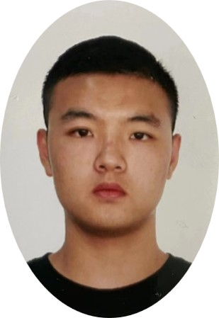
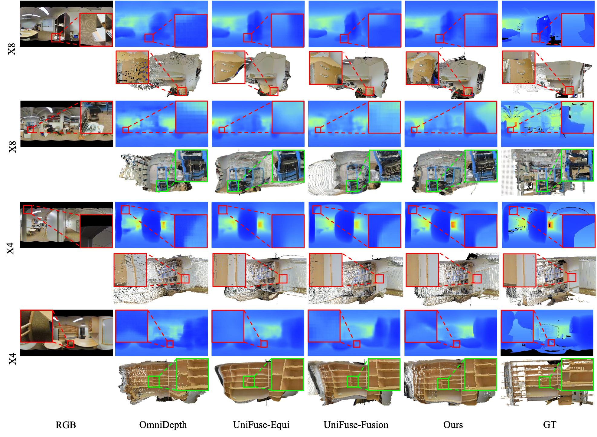
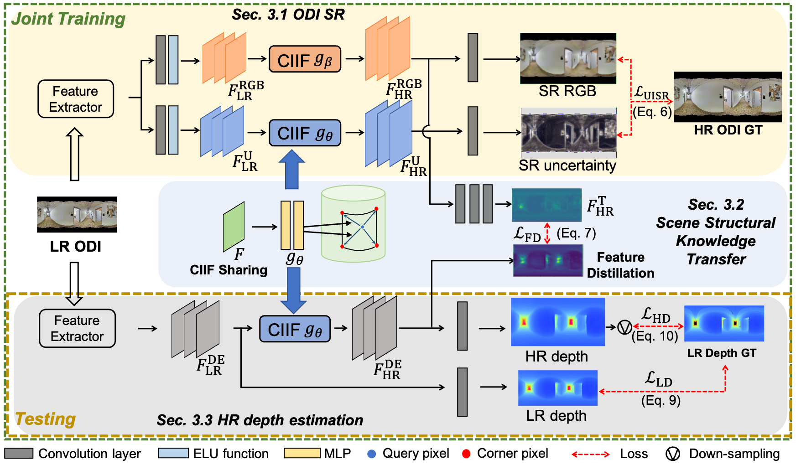

360$^\circ$ High-Resolution Depth Estimation via Uncertainty-aware Structural Knowledge Transfer
-
Zidong Cao
AI Thrust, HKUST(GZ)
-

Hao Ai
AI Thrust, HKUST(GZ)
-

Addison Lin Wang
AI Thrust, HKUST(GZ)
Dept. of CSE, HKUST

Abstract
Recently, omnidirectional images (ODIs) have become increasingly popular; however, their angular resolution tends to be lower than that of perspective images. This leads to degraded structural details such as edges, causing difficulty in learning 3D scene understanding tasks, especially monocular depth estimation. Existing methods typically leverage high-resolution (HR) ODI as the input, so as to recover the structural details via fully-supervised learning. However, the HR depth ground truth (GT) maps may be arduous or expensive to be collected due to resource-constrained devices in practice. Therefore, in this paper, we explore for the first time to estimate the HR omnidirectional depth directly from a low-resolution (LR) ODI, when no HR depth GT map is available. Our key idea is to transfer the scene structural knowledge from the readily available HR image modality and the corresponding LR depth maps to achieve the goal of HR depth estimation without extra inference cost. Specifically, we introduce ODI super-resolution (SR) as an auxiliary task and train both tasks collaboratively in a weakly supervised manner to boost the performance of HR depth estimation. The ODI SR task takes an LR ODI as the input to predict an HR image, enabling us to extract the scene structural knowledge via uncertainty estimation. Buttressed by this, a scene structural knowledge transfer (SSKT) module is proposed with two key components. First, we employ a cylindrical implicit interpolation function (CIIF) to learn cylindrical neural interpolation weights for feature up-sampling and share the parameters of CIIFs between the two tasks. Then, we propose a feature distillation (FD) loss that provides extra structural regularization to help the HR depth estimation task learn more scene structural knowledge. Extensive experiments demonstrate that our weakly-supervised method outperforms baseline methods, and even achieves comparable performance with the fully-supervised methods.
Results on the benchmarkdataset: Stanford2D3D, Matterport3D and 3D60
Approach
The goal is to predict an HR omnidirectional depth map $D_{\mathrm{HR}}$ from an LR ODI $I_{\mathrm{LR}}$ as input, using only an LR depth map $D^{\mathrm{GT}}_{\mathrm{LR}}$ for supervision. As shown in Fig.~\ref{fig:framework}, our framework consists of an ODI SR task, a scene structural knowledge transfer (SSKT) module, and an HR depth estimation task. The ODI SR is employed as an auxiliary task and trained collaboratively with the HR depth estimation task. Specifically, we introduce uncertainty estimation to the ODI SR task for scene structural knowledge extraction. To transfer the extracted knowledge, the SSKT module is proposed with two components. The first is to share the parameters of the proposed cylindrical implicit interpolation function (CIIF) between the two tasks. The second is the feature distillation (FD) loss that provides extra structural regularization.
